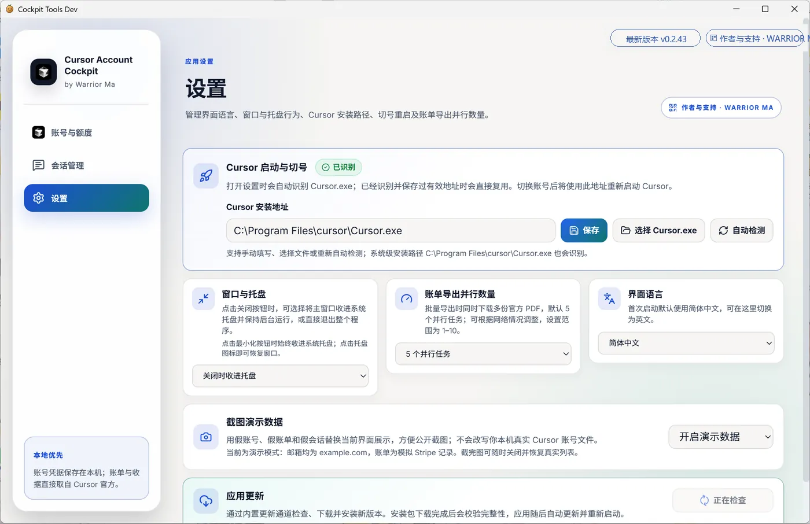

1. Account list
Full-width rows for email, plan, usage, and actions.


Accounts, billing, sessions, settings
Full-width rows for email, plan, usage, and actions.
Card layout for a quick multi-account scan.

Month range, status filters, batch Stripe PDF export.

Read-only local Agent sessions with search and export.

Cursor path, tray, export concurrency, language, screenshot demo data.
